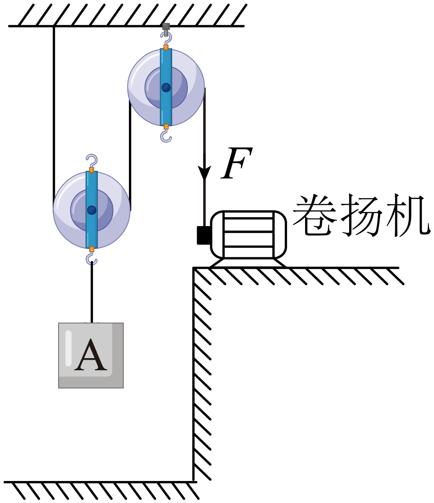
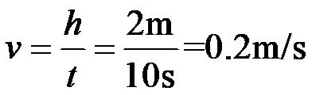
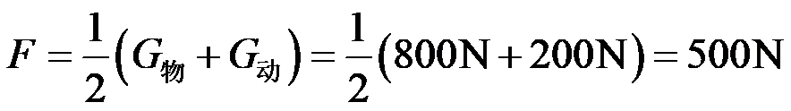
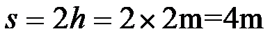
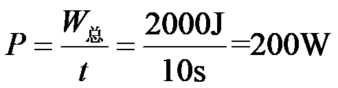
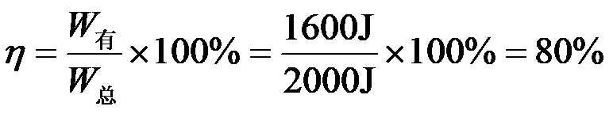

2023年北京中考物理 第10题 解析
10. 用如图所示 装置提升重为800N的物体A，动滑轮重为200N。在卷扬机对绳子的拉力F作用下，物体A在10s内竖直匀速上升了2m。在此过程中，不计绳重和摩擦，下列说法正确的是（ ）
装置提升重为800N的物体A，动滑轮重为200N。在卷扬机对绳子的拉力F作用下，物体A在10s内竖直匀速上升了2m。在此过程中，不计绳重和摩擦，下列说法正确的是（ ）

A. 物体A上升的速度为0.4m/sB. 滑轮组的有用功为2000J
C. 拉力F的功率为100WD. 滑轮组的机械效率为80%
【答案】D
【解析】
【详解】A．物体A在10s内竖直匀速上升了2m，上升的速度为

故A错误；
B．装置提升重为800N的物体A，竖直匀速上升了2m，滑轮组的有用功为
故B错误；
C．由图知，n=2，不计绳重和轮与轴间的摩擦，拉力为

拉力端移动距离为

拉力做的总功
拉力做功的功率

故C错误；
D．滑轮组的机械效率为

故D正确。
故选D。